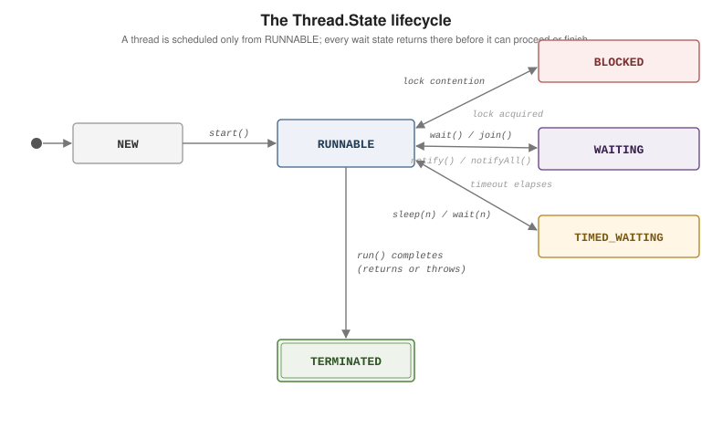

Concurrency Basics
|
This content was generated with the assistance of AI and should be verified against the official documentation before being relied on in production. |
A thread is an independent path of execution inside a process, sharing that process’s heap with every
other thread. That sharing is what makes threads cheap to communicate through — and what makes
concurrency hard: two threads touching the same field with no coordination is a bug. This page covers
raw threads and the primitives the language itself provides to coordinate them; the
java.util.concurrent toolkit and virtual threads have their own pages. References:
the Java Tutorials Concurrency trail,
the Thread
Javadoc, and JLS Chapter 17: Threads
and Locks.
Processes vs. Threads, and Starting Work
A process has its own memory space and is isolated by the OS. A thread runs inside a process and
shares its memory. Every Java program is already multi-threaded (main, plus JVM threads for GC and
JIT compilation). Define your own work as a
Runnable (runs,
returns nothing) or a
Callable
(returns a value or throws a checked exception).
// 1. Runnable as a lambda (preferred) -- hand the task to a Thread
Thread t1 = new Thread(() -> System.out.println("run by " + Thread.currentThread().getName()));
// 2. subclass Thread (rare -- only when you must override more than run())
class Worker extends Thread {
@Override public void run() { System.out.println("working"); }
}
// 3. Callable -- needs an ExecutorService to run it (see High-Level Concurrency)
Callable<Integer> job = () -> 6 * 7;start() vs. run(). start() asks the JVM for a fresh thread and invokes run() on it. Calling
run() yourself just executes it on the current thread — no concurrency, and a classic mistake.
Thread t = new Thread(() -> System.out.println(Thread.currentThread().getName()));
t.start(); // "Thread-0" -- runs on a new thread
t.run(); // "main" -- ordinary method call, no new thread
t.start(); // IllegalThreadStateException -- a thread starts exactly oncejoin() blocks until another thread finishes; sleep(millis) pauses the current thread and holds
every lock it owns.
var squares = new int[3];
var workers = new Thread[3];
for (int i = 0; i < 3; i++) {
int idx = i;
workers[i] = new Thread(() -> squares[idx] = idx * idx);
workers[i].start();
}
for (Thread w : workers) {
w.join(); // wait for each worker to terminate
}
// every write in a worker happens-before the join() that saw it end -> safe to read now
System.out.println(java.util.Arrays.toString(squares)); // [0, 1, 4]Interruption. interrupt() sets a flag; it does not stop anything. Blocking calls (sleep, wait,
join, most java.util.concurrent waits) react by throwing
InterruptedException
and clearing the flag; a CPU-bound loop must poll Thread.currentThread().isInterrupted() itself.
The protocol: either let InterruptedException propagate, or restore the flag with
Thread.currentThread().interrupt() — never swallow it silently.
Runnable pollLoop = () -> {
while (!Thread.currentThread().isInterrupted()) {
// ... one CPU-bound step ...
}
System.out.println("stopped cleanly");
};
Runnable blockingLoop = () -> {
try {
while (true) {
Thread.sleep(1000); // wakes early by throwing if interrupted
// ... periodic work ...
}
} catch (InterruptedException e) {
Thread.currentThread().interrupt(); // restore the flag, then return
}
};
Thread t = new Thread(blockingLoop);
t.start();
t.interrupt(); // asks t to stop; its sleep() throws InterruptedExceptionDaemon threads. setDaemon(true) (before start()) marks a thread as background-only: the JVM
exits once only daemon threads remain, killing them mid-step. Use them for housekeeping (cache
eviction, metrics flushing), never for work that must complete.
The Thread Lifecycle, Locks, and wait/notify
Thread.State
names the six states a thread passes through:
|
created, not yet started |
|
running, or ready and waiting for a CPU (the OS scheduler decides) |
|
waiting to acquire a monitor lock another thread holds |
|
parked with no deadline: |
|
parked with a deadline: |
|
|

Intrinsic locks. Every object owns one monitor lock. synchronized acquires it on entry and
releases it on exit — including on exception. While one thread holds an object’s monitor, any other
thread reaching a synchronized region on the same object sits in BLOCKED.
class Counter {
private long count; // guarded by 'this'
synchronized void increment() { count++; } // locks 'this' for the body
synchronized long get() { return count; }
}
class BankAccount {
private final Object lock = new Object(); // private -- outsiders cannot grab it
private long cents;
void deposit(long amount) {
synchronized (lock) { // block form: narrow, explicit target
cents += amount;
}
}
}
class Registry {
private static int nextId;
static synchronized int allocate() { return nextId++; } // locks the Class object
}count++ is read-modify-write — three steps — so an unsynchronized increment() loses updates
under contention. synchronized provides both mutual exclusion and visibility (next section).
Prefer a private lock object to synchronized (this) so unrelated code cannot deadlock you by locking
your instance.
wait / notify / notifyAll. Called on an object whose monitor you currently hold, these let
threads coordinate: wait() releases the monitor and parks until another thread calls notify() or
notifyAll() on the same object. Always wait() inside a loop that re-tests the condition — spurious
wakeups are permitted, and the state may have changed again before you re-acquire the lock. Calling
them without holding the monitor throws
IllegalMonitorStateException.
class BlockingBox<T> {
private T value;
synchronized void put(T v) throws InterruptedException {
while (value != null) {
wait(); // release the lock; wait for a take()
}
value = v;
notifyAll(); // wake any waiting take()
}
synchronized T take() throws InterruptedException {
while (value == null) {
wait();
}
T v = value;
value = null;
notifyAll();
return v;
}
}This is a teaching example; real code should use
BlockingQueue
or another java.util.concurrent synchronizer, covered on
High-Level Concurrency.
Visibility and the Java Memory Model
Mutual exclusion is only half the problem. Without a happens-before relationship, one thread may never observe another’s writes — the JVM and CPU may keep a field in a register and reorder independent instructions. JLS 17.4 defines the Java Memory Model as a set of happens-before edges, including:
-
each action in a thread happens-before every later action in that same thread;
-
releasing a monitor happens-before any later acquisition of it;
-
a write to a
volatilefield happens-before every later read of that field; -
Thread.start()happens-before the started thread’s first action; -
a thread’s final action happens-before another thread returning from
join()on it; -
finalfields set in a constructor are visible to any thread that receives the object after construction completes (safe publication).
volatile makes one field’s reads and writes atomic and immediately visible, without locking. It
does not make compound actions atomic.
class Worker implements Runnable {
private volatile boolean running = true; // without volatile the reader may loop forever
void stop() { running = false; }
public void run() {
while (running) {
// ... work ...
}
}
}
// volatile is NOT enough for this -- ++ is read-modify-write:
// volatile int hits; two threads doing hits++ still lose updates.
// use AtomicInteger, or synchronized.Classic hazards:
-
Race condition — the outcome depends on thread timing.
check-then-act(if (map.get(k) == null) map.put(k, v)) andread-modify-write(count++) are races unless the whole sequence is made atomic. -
Stale read — a thread keeps seeing an old value because no happens-before edge connects it to the writer (the non-
volatilerunningflag above). -
Deadlock — two threads each hold a lock the other needs. The standard cure is a global lock order: every thread takes locks in the same sequence.
// DEADLOCK: transfer(a, b) and transfer(b, a) running at once
void transfer(Account from, Account to, long amount) {
synchronized (from) {
synchronized (to) {
from.debit(amount);
to.credit(amount);
}
}
}
// FIX: lock the lower account id first, so every caller agrees on the order
void transfer(Account from, Account to, long amount) {
Account first = from.id() < to.id() ? from : to;
Account second = from.id() < to.id() ? to : from;
synchronized (first) {
synchronized (second) {
from.debit(amount);
to.credit(amount);
}
}
}The jstack tool (or jcmd <pid> Thread.print) dumps every thread’s state and the locks it holds,
and names any deadlock cycle it detects.
See Also
-
High-Level Concurrency — executors,
CompletableFuture, concurrent collections, andjava.util.concurrent.atomicinstead of rawsynchronized. -
Virtual Threads — cheap threads for blocking code, and what still pins a carrier thread.
-
Exceptions — handling
InterruptedExceptionand why swallowing it is a bug. -
Collections Framework — which collections are thread-safe and which need external synchronization.